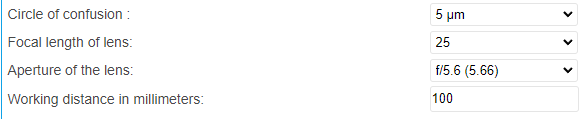
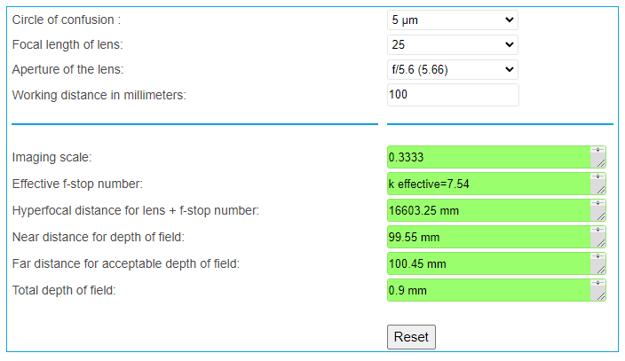

计算器
计算景深
景深（DOF）是指物体可以远离或接近相机而不导致图像模糊的范围。 下面的计算器估计景深，可以指导你定位你的相机和物体。
输入值
Circle of Confusion (模糊圈 micrometers, μm)
Focal length of lens (镜头焦距 in millimeters, mm)
aperture of the lens (镜头的孔径大小)
Working distance in millimeters (工作距离, 单位：毫米)
如何使用计算器
访问 计算器网页
输入参数到所有输入框，结果将显示为下图。
你可以参考相机的defualt设置来进行输入。
型号 |
BP AMR |
BP AMR-GPU |
BP-S |
BP-M |
BP-L |
|---|---|---|---|---|---|
模糊圈 |
3.45 |
3.45 |
5.86 |
5.86 |
5.86 |
镜头焦距 |
6 |
6 |
12.5 |
16 |
12.5 |
镜头孔径大小 |
f/5.6 |
f/5.6 |
f/5.6 |
f/5.6 |
f/5.6 |
工作距离（毫米） |
500-1000 |
500-1000 |
500-1000 |
800-1800 |
1000-3000 |
摄像机选择工具
下面的html页面将帮助你找出适合你需求的相机。